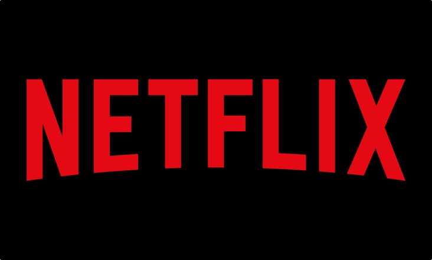

Plataformas de streaming para ver anime
Crunchyroll
Crunchyroll es un servicio de streaming over-the-top de video bajo demanda estadounidense propiedad de Sony Group Corporation.
El servicio distribuye principalmente películas y series de televisión producidas por los medios de Asia oriental, incluido el anime japonés,
y tiene su sede en San Francisco, California, con la sucursal japonesa ubicada en Shibuya, Tokio.
Netflix
La plataforma de streaming Netflix tambien cuenta con un espacio dedicado al anime, en el cual su directorio es bastante amplio, Es muy recomendable esta plataforma
ya que cuenta para configurar el idioma segun lo deseés y con muy buena calidad de audio y video.
